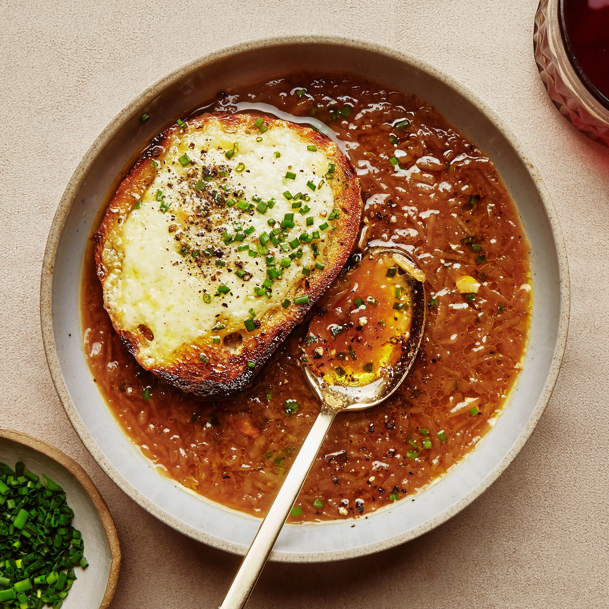

French Onion Soup

Description
French onion soup (French: soupe à l’oignon) is a type of soup usually based on meat stock and onions, and often served gratinéed with croutons or a larger piece of bread covered with cheese floating on top. Although ancient in origin, the dish underwent a resurgence of popularity in the 1960s in the United States due to a greater interest in French cuisine. French onion soup may be served as a meal in itself or as a first course.
Ingredients
- 3 tablespoons butter
- 3 onions, thinly sliced
- 2 tablespoons water
- 2 ½ tablespoons all-purpose flour
- 6 ⅓ cups chicken stock
- ⅓ cup white wine
- 1 tablespoon white wine
- ½ teaspoon salt
- ¼ teaspoon ground black pepper
- 6 (1/2 inch) slices French baguette
- ½ cup shredded Gruyère cheese
Steps
- Melt butter in a large saucepan over low heat. Add onions; cook, stirring constantly, until golden, 15 to 30 minutes.
Add water; cover and cook until onions are very tender, about 15 minutes.
- Sprinkle flour into the saucepan; cook, stirring constantly, until onions are coated, about 5 minutes.
Pour in chicken stock and 1/3 cup plus 1 tablespoon white wine; season with salt and pepper.
Bring to a boil; reduce heat and simmer gently until flavors combine, about 20 minutes.
- Set oven rack about 6 inches from the heat source and preheat the oven's broiler.
- Toast baguette slices until very crisp, 3 to 5 minutes. Divide slices among 6 oven-safe soup bowls. Ladle soup on top. Sprinkle Gruyère cheese over each bowl.
- Transfer bowls to the preheated oven; broil until cheese is melted and bubbly, 3 to 5 minutes.